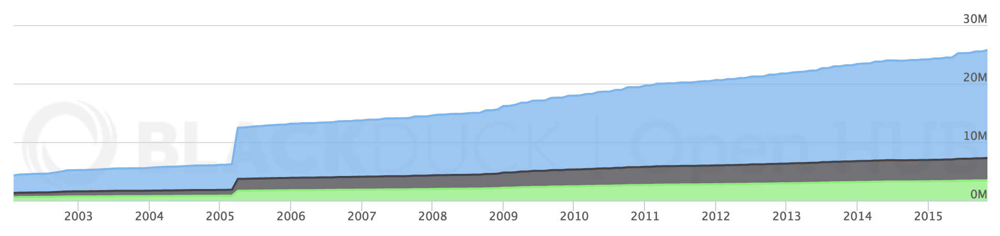
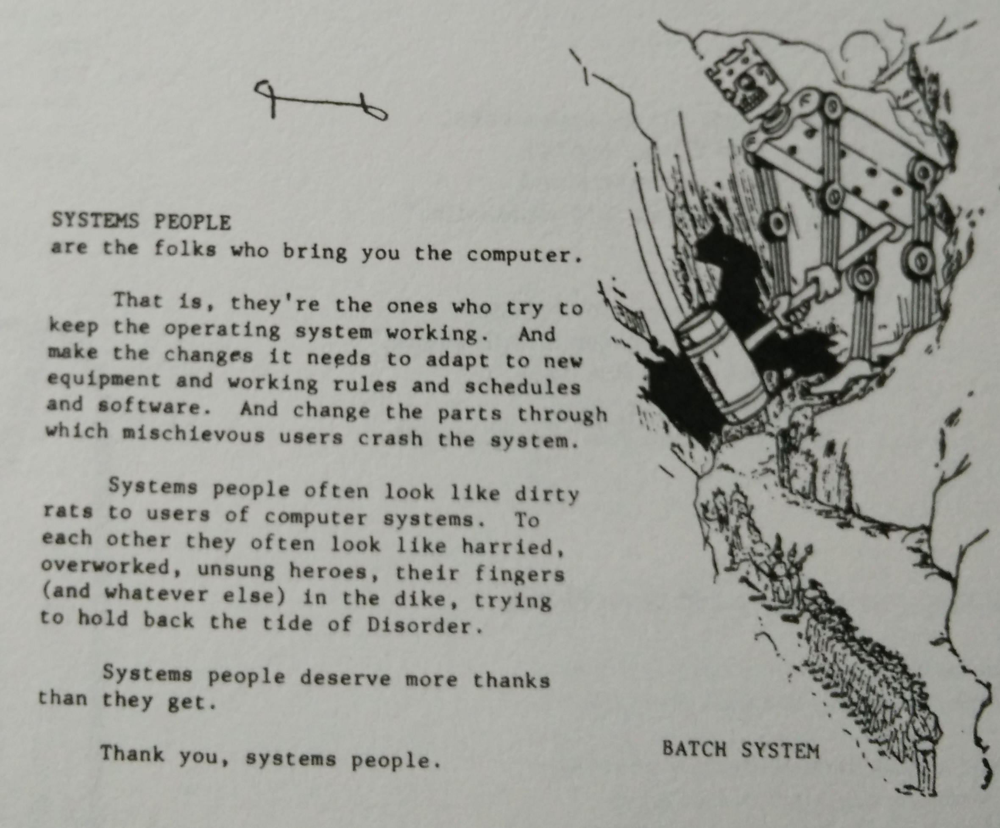

“Linux containers are an operating-system-level virtualization environment for running multiple isolated Linux systems on a single
Linux control host”
“Building on top of facilities provided by the Linux kernel, a Docker container, unlike a virtual machine, does not require or include a separate
operating system. Instead, it relies on the kernel's functionality and uses resource isolation and separate
namespaces to isolate the application's view of the operating system.”
“Docker containers wrap up a piece of software in a complete filesystem that contains everything it needs to run: code, runtime, system tools,
system libraries – anything you can install on a server. This guarantees that it will always run the same, regardless of the environment it is
running in.” https://www.docker.com/what-docker
automation, repeatability, reliability
Repeatable builds
Ship one artifact
Do not depend on the runtime environment
Standard reusable tooling
Build, test, run pipeline with one container shipped through it
unikernels
“Unikernels are specialised, single-address-space machine images constructed by using library operating systems.”
“Unikernels are self contained applications that bundle all their dependencies, and only their dependencies.”
Containers bundle most dependencies, but rely on the kernel the host is running. Unikernels bundle everything.
Code you want to run
Code your OS includes
Currently Linux has over 25 million lines of code...

... and Windows has 50 million.
Code you want to run
Code your OS includes
Unikernels
First cut down on the amount of operating system dependencies lurking under your code.
Just link exactly what you need as libraries, eg tcp, filesystems, etc
Then they can also make that code less scary.
A security hardened container
No large OS attack surface
Just what you need, no extra shell or other executables, so small attack surface
Can run inside virtual machine for sandboxing
Language guarantees, like type safety and memory safety
Can use additional sandboxing techniques: ASLR, NaCl etc
Whole system hardening
Ideal for embedded systems
Making systems programming less scary

Systems programming is unusually difficult compared to other forms of programming
OS development and design are the pinnacle or programming achievement, and the highest calling for any programmer
Systems programmers are inherently superior to other kinds of programmers
A competent systems programmer will naturally be gifted in all other forms of programming

.jpg)


{kind=link}
.jpg){kind=link}
.jpg){kind=link}